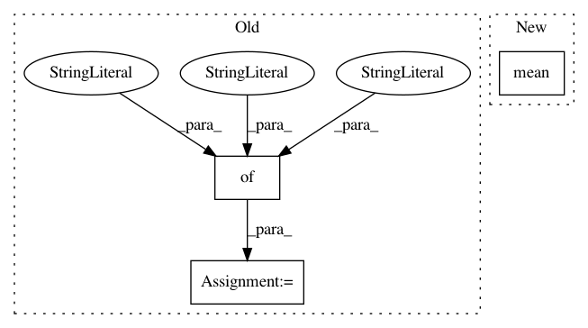

f97bdca0ab537fe71ca903f65c49e31882ce747f,dipy/core/sphere.py,,interp_rbf,#Any#Any#Any#Any#Any#Any#Any#,500
Before Change
"smooth" : smooth,
"norm" : norm}
else:
kwargs = {"function": function,
"smooth": smooth,
"norm" : norm}
rbfi = Rbf(sphere_origin.x, sphere_origin.y, sphere_origin.z, data,
**kwargs)
return rbfi(sphere_target.x, sphere_target.y, sphere_target.z)
After Change
if epsilon is None:
// Use a heuristic that seems to work here: take epsilon to be the
// average distance between the origin points in this norm:
epsilon = np.mean(norm(sphere_origin.vertices.T[..., :, np.newaxis],
sphere_origin.vertices.T[..., np.newaxis, :]))
kwargs = {"function": function,
"epsilon": epsilon,
"smooth" : smooth,
In pattern: SUPERPATTERN
Frequency: 4
Non-data size: 3
Instances
Project Name: nipy/dipy
Commit Name: f97bdca0ab537fe71ca903f65c49e31882ce747f
Time: 2015-09-13
Author: arokem@gmail.com
File Name: dipy/core/sphere.py
Class Name:
Method Name: interp_rbf
Project Name: scikit-optimize/scikit-optimize
Commit Name: 97f4cedd0caf8b70b0688c939aac825662a99b8b
Time: 2016-04-19
Author: manojkumarsivaraj334@gmail.com
File Name: examples/plot_random_vs_gp.py
Class Name:
Method Name: compute_mean_validation_score
Project Name: CNuge/kaggle-code
Commit Name: 641162c5cb58c24cb9dfee9e37843547e62936cc
Time: 2018-10-15
Author: nugentc@uoguelph.ca
File Name: google_analytics/predict_spending.py
Class Name:
Method Name:
Project Name: mozilla/TTS
Commit Name: c65712426aa8fe18a6b40b71a9a6b2c9681e9ec2
Time: 2020-11-14
Author: erogol@hotmail.com
File Name: TTS/bin/tune_wavegrad.py
Class Name:
Method Name: